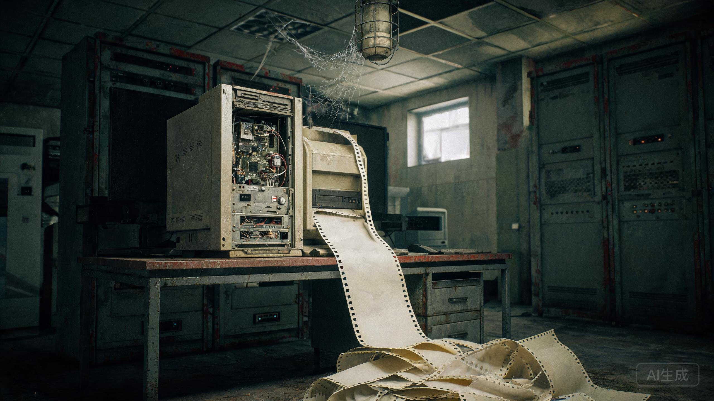

第四制药厂旧址 · 地下二层机房
机柜没有接电。备用电池在1998年就鼓了包。日志打印机却在出纸。

| 时间 | 记录 |
|---|---|
| 1998-10-07 23:40:11 | 市电中断。UPS 剩余 4 分钟。 |
| 1998-10-07 23:59:59 | 用户 04071 登录。来源 IP：B3-03。 |
| 1998-10-08 00:00:03 | admin 删除帖 4071。原因：无。 |
| 1998-10-08 00:00:05 | 系统停机。最后一条正常日志。 |
| —— 纸带在这里空了两万三千七百多行 —— | |
| 2026-08-17 03:17:17 | POWER ON。外部电源：无。电池：无。 |
| 2026-08-17 03:17:18 | 用户 04071 登录。距上次登录：10146 天。 |
| 2026-08-17 03:17:20 | 帖 4071 重新提交。结果：成功。 |
| 2026-08-17 03:17:21 | 会话状态：STILL INSIDE。 |
| 2026-08-17 03:18:00 | 停机请求：未收到。 |
| 2026-08-17 18:42:07 | 打印机开始出纸。操作人：无。 |
机柜的电源线被人剪断过，断口氧化成黑色。UPS 电池鼓着包，漏出来的液体在水泥地上干成了一片白痕。
硬盘被人拆走了。主板上没有内存条。按任何一本维修手册的说法，这台机器都不可能开机，更不可能写日志。
可是打印机的纸带拖到了门口，长九米四。最后一段的时间戳是 2026-08-17 03:17——就是那条帖子重新出现的那一秒。
“STILL INSIDE”不是 BBS 程序的字段。档案馆请人核对过 1998 年的源码，整个站里没有这一行字符串。它像是有人用键盘一个字一个字敲进去的。
最后那一行十六进制，翻译过来是“20260817”。打印它的时候，机房的总闸已经断了六分钟。
父亲在 1998 年 10 月 7 日 23:59 登录过这台机器。二十八年后，同一个账号在同一个 IP 上登录，会话状态停在“仍在里面”。
这不是鬼故事。这是一份没人能解释的现场记录。它的编号是 SF-04071，和父亲的工号一模一样。